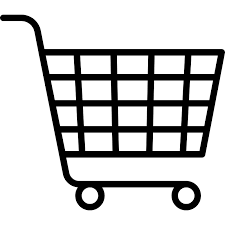
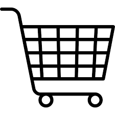
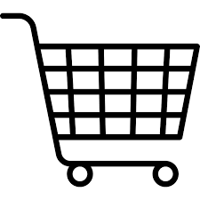
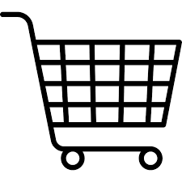

Log ind

Log ind

Log ind

Log ind

Hvordan bringer man is fra fabrikken og hjem til forbrugeren, uden at kvaliteten bliver forringet undervejs?
Det spørgsmål satte den gæve svensker Eric Ericsson sig for at løse.
I årenes løb havde mange opfindere og is-elskere forsøgt at opfinde ”Den ubrudte frysekæde”, men intet var rigtigt slået igennem. I 1968 var Eric Ericsson klar til at afprøve en ny idé i Sverige og i 1976 kom Hjem-IS til Danmark.
*Ericsson koblede en trailer med kummefryser efter sin bil, fyldte kummefryseren med is i hele kartoner og kørte så ud på villavejene og ringede med klokken. Folk var ellevilde og købte isene. Endelig var starten på "Den ubrudte frysekæde" gjort.
Det blev en stor succes. Det udviklede sig til den blå Hjem-IS bil, du kender i dag, og som hver dag året rundt bringer is og glæde ud til de danske is-elskere.
Ericsson havde forsøgt at løse et klassisk problem i hele verdens is-industri. For is er en sart størrelse. Faktisk den mest sarte af alle dybfrosne madvarer. Is begynder at tø, hvis temperaturen kommer over -15 grader C, og det går ud over både smag og kvalitet. Derfor passer vi godt på vores is hos Hjem-IS.
I 41 år har Hjem-IS spredt glæde landet over med kvalitets-is til enhver lejlighed. Vores opskrift har været den samme hele tiden; omhu, gode råvarer og en ubrudt frysekæde fra isfabrik til forbruger.
Vi er stolte over at kunne forsøde livet med stunder, der får tiden til at stå stille. For god is har netop den egenskab, at vi ikke kan tænke på andet, mens vi spiser den. Vi kan heller ikke skynde os, nej, vi må overgive os til smagen i øjeblikket, sænke skuldrene og nyde det.
Hjem-IS er ejet af FOOD UNION og beskæftiger 15 ansatte på hovedkontoret. Derudover er der 165 ansatte fordelt på 10 depoter.